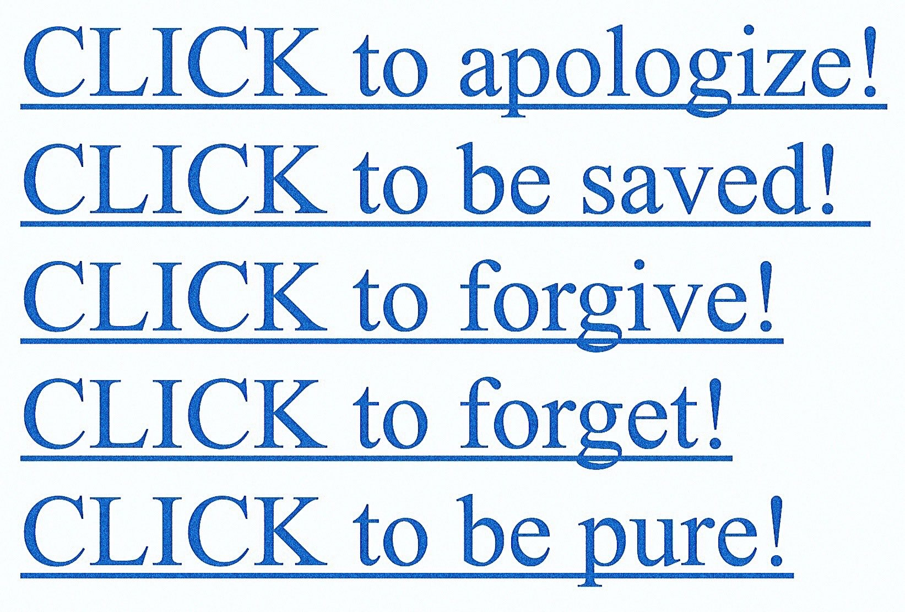
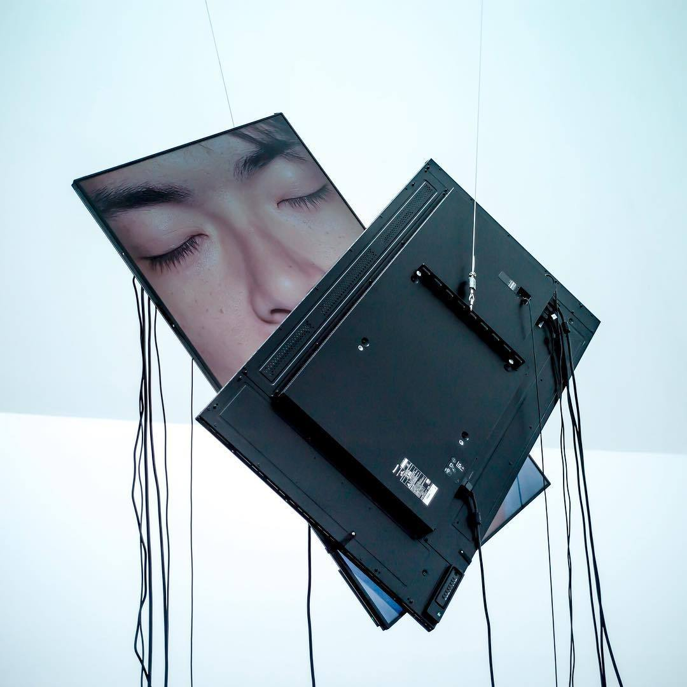
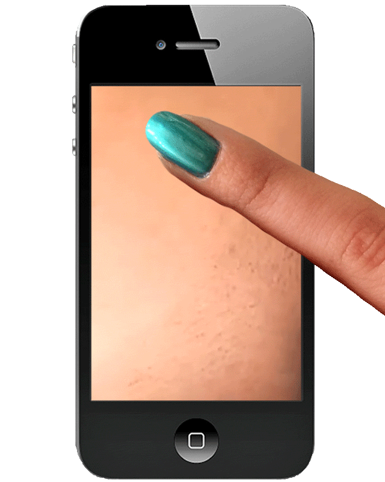
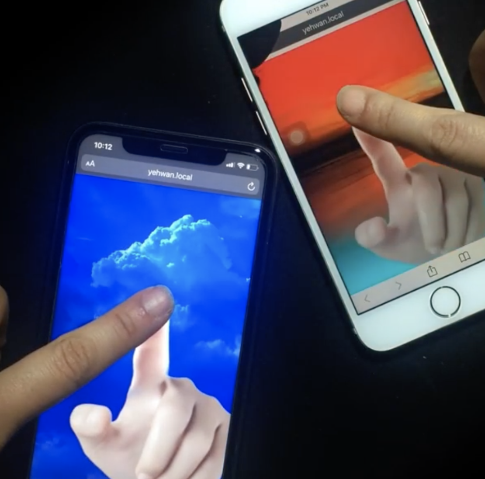

“Scrolling is not resting. Repeat after me: SCROLLING IS NOT RESTING. To rest is to be present. To rest is to disconnect, tune out, tune in, relax, enjoy a moment to ourselves. Nothing can be further from resting than to be online, with its endless noise, all the negative/positive, happy/sad, good/bad, funny/disturbing content coming at us all at once. Online is anti-rest."
Someone, 28, Switzerland


“Something about that feeling when you find some really good content on the internet, you feel like you're in a back alley or a small town in a different country. You're worried you'll never find it again and all of a sudden you're thinking about how you got here, the links you clicked and the thoughts you thought in order to get to this very specific spot. You think about all the links you could have clicked or thoughts you could have thought that would have led you anywhere but here. You feel lucky you've arrived in this secret garden”
Ethan W. Anderson
“When you use computers too much—which is to say a typical amount—they start to change you. I’ve had Photoshop dreams, Visio dreams, spreadsheet dreams, and Web browser dreams”
Paul Ford

“My relationship with the phone has been changed over the last 1.5 decade, from very initial Nokia 6233 that my dad used to have to the Nokia 6.1 that I have right now. The relation has grown from playing games to becoming an intelligent assistant. It's just surprising to me.”
Male, 30, India
